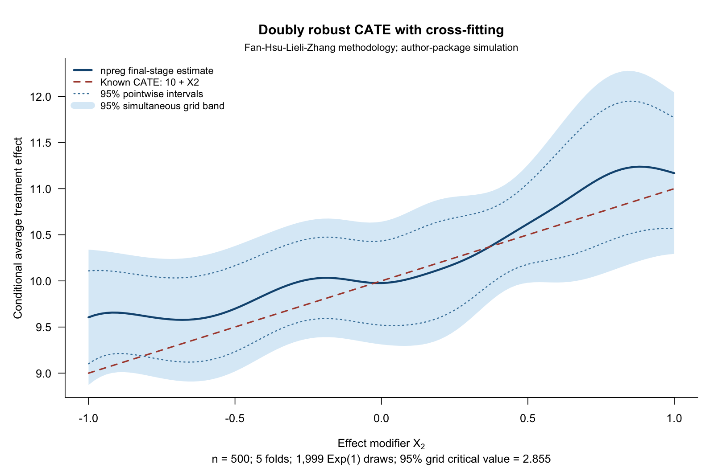

Doubly Robust Treatment Effects
npreg, treatment effects, doubly robust scores, cross-fitting, conditional average treatment effect, uniform inference
This example combines high-dimensional nuisance estimation with a low-dimensional kernel regression to estimate how a treatment effect varies with a selected covariate. It follows Fan, Hsu, Lieli and Zhang (2022). hdm supplies the lasso nuisance fits, npreg supplies the final local-linear smoother, and the script implements the paper’s variance and multiplier inference calculations explicitly.
Download the complete R script. It requires np and hdm, simulates its own data, and writes a PNG, CSV tables and an RDS replication file to np_crossfit_cate_results in your working directory. It does not install packages. The example was checked with np 0.80-1 and hdm 0.3.2.
For regression discontinuity and a randomized-trial example, start with Causal Inference with Local Polynomials.
The target and its assumptions
Let \(D\) indicate treatment, \(Y\) be the observed outcome, \(X\) contain the pre-treatment adjustment covariates, and \(Z\) be a selected component of \(X\). The target is the reduced-dimensional conditional average treatment effect,
\[ \tau(z)=E[Y(1)-Y(0)\mid Z=z]. \]
Identification requires consistency, unconfoundedness conditional on \(X\), and overlap between treatment groups. Conditioning the reported effect on one variable does not mean adjusting for only that variable: the nuisance models use the full adjustment set. Cross-fitting does not resolve unmeasured confounding or a lack of overlap.
Doubly robust scores and cross-fitting
Write \(e(x)=P(D=1\mid X=x)\) and \(\mu_d(x)=E[Y\mid D=d,X=x]\). The score combines outcome predictions with inverse-probability-weighted residuals:
\[ \begin{aligned} \widehat\psi_i={}&\widehat\mu_1(X_i)-\widehat\mu_0(X_i)\\ &+\frac{D_i\{Y_i-\widehat\mu_1(X_i)\}}{\widehat e(X_i)}\\ &-\frac{(1-D_i)\{Y_i-\widehat\mu_0(X_i)\}}{1-\widehat e(X_i)}. \end{aligned} \]
Its population conditional mean recovers the CATE if the propensity model is correct or both outcome regressions are correct, subject to the usual integrability and overlap conditions. Valid confidence bands require the paper’s additional nuisance-rate and smoothing conditions; double robustness alone is not a coverage guarantee.
The script uses five balanced random folds. For each fold it:
- Fits the propensity and treatment-specific outcome models on the other four folds, using
hdm::rlassologitandhdm::rlasso. - Predicts those nuisance functions and constructs scores for the held-out observations.
- Fits a Gaussian local-linear
npregregression of the held-out scores on \(Z\), evaluated on a common grid.
It then averages the five fitted curves. This follows the paper’s separate-fold construction; pooling all cross-fitted scores into a single regression generally gives a different finite-sample estimate.
The essential smoothing step is:
# held indexes one fold; score contains its held-out doubly robust scores.
fit <- npreg(txdat = dat$X2[held], tydat = score[held],
exdat = at, bws = h, regtype = "ll",
ckertype = "gaussian", ckerorder = 2,
bwtype = "fixed", bwscaling = FALSE, se = FALSE)
fold_curves[, k] <- fitted(fit)
# After completing all folds:
estimate <- rowMeans(fold_curves)The bandwidth is the paper’s full-sample undersmoothing rule, \(h=1.06\,s_Z n^{-2/7}\). Ordinary regression cross-validation optimizes a different criterion and is not substituted for this inference prescription.
A seeded example with known truth
The example uses the authors’ package simulation: 500 observations, 100 independent standard-normal covariates, and \(Z=X_2\). Treatment probability depends on \(X_{97},\ldots,X_{100}\); the treated potential outcome is \(10+X_1+X_2+X_3+X_4+\epsilon\), with independent standard-normal noise. The untreated potential outcome is zero, giving \(\tau(z)=10+z\). All 100 covariates enter the nuisance formulas.
In this particular generator, the propensity and outcome functions use disjoint independent covariates. It demonstrates the computation rather than testing bias removal under confounding. It is also distinct from the paper’s empirical maternal-smoking application.

The grid is \(-1,-0.98,\ldots,1\), the bandwidth is 0.186776, and the 1,999 multiplier draws give a two-sided 95% critical value of 2.855, compared with 1.960 for the pointwise intervals. The known curve lies inside the simultaneous band in this sample. This is a reproducible illustration, not a repeated-sampling coverage study. Seeds for the data, folds, nuisance fits and multipliers are recorded in the script.
The example explicitly uses positive Exp(1) weights, which have mean and variance one and satisfy the paper’s general multiplier assumption. The paper’s illustrated algorithm uses N(1,1) weights. Those weights produced indefinite local fits in 49 of 1,999 draws in this example; all exponential draws were retained. The exponential option already exists in hdcate’s R6 interface. See the reproducibility note for the numerical diagnosis and reference-software repairs.
Uniform inference
The script computes each fold’s variance using the paper’s kernel-weighted score-residual formula. It averages the fold variances before taking the square root and scaling by \(\sqrt{nh}\) to obtain the standard error.
For every multiplier draw, it keeps the nuisance fits and bandwidth fixed, assigns independent observation-level weights, and refits the second-stage local-linear regressions. The same weights are used across the evaluation grid, preserving dependence between the fitted values. Both the local design matrix and the score moments change with those weights.
The 95% empirical quantile of the maximum absolute standardized deviation supplies the simultaneous critical value. This approximates the paper’s uniform inference using a maximum on the 101 specified grid points; joining endpoints for display does not establish coverage between them. The calculation differs from the fixed-covariance Gaussian simulation in the cholesterol example.
npreg provides the original fold fits. The script adds the paper-specific variance and weighted local-linear refits explicitly; ordinary se() or plotting intervals are not substituted for those calculations. These bands describe uncertainty in the conditional average treatment effect, not prediction uncertainty for an individual’s outcome.
Reproduce and inspect the checks
After downloading the script, run:
source("np_crossfit_cate.R")The held-out fitted propensities range from 0.0139 to 0.9751 in this sample. The script reports them and does not clip or trim them. For a new application, inspect overlap and choose the adjustment set before treating the resulting curve as causal.
The standalone script was checked against an isolated repair of the authors’ hdcate package, pinned to a specific source revision. At matching folds, nuisance predictions and bandwidth, the largest fold-fit difference was \(2.14\times10^{-14}\); simultaneous-band endpoints agreed within \(1.25\times10^{-14}\). These are numerical-equivalence checks, not a comparison with untouched package defaults or proof of finite-sample coverage.
Download the fitted curve and intervals, reference comparison, standalone checks, or the reference-verification bundle. The reproducibility note records the repairs, multiplier choice, versions and verification commands.
# Fan, Hsu, Lieli and Zhang (2022), JBES 40(1), 313-327.
# https://doi.org/10.1080/07350015.2020.1811102
# Research illustration: authors' simulated DGP, not the birth-weight application.
# Requires np and hdm. No package installation or hdcate dependency.
# Exp(1) weights are chosen explicitly: paper Assumption 4.1; hdcate's "bayes"
# option. They differ from the N(1,1) implementation illustrated in the paper.
# Reference checks and isolated repairs are documented in the accompanying
# README.md and reference_verification.zip; this script needs no hdcate package.
library(np)
library(hdm)
options(np.messages = FALSE)
out <- 'np_crossfit_cate_results'
dir.create(out, showWarnings = FALSE)
n <- 500L; p <- 100L; K <- 5L; B <- 1999L
at <- seq(-1, 1, by = .02)
seeds <- c(data=20261011L, folds=20261012L, nuisance=20261013L, multiplier=20261014L)
# Same draws and generator as microfan1/hdcate, pinned commit
# 76b084d99aa8c5dbeaafd3680bac7dfedd3a6a54, R/simulation_data.R (GPL >= 3).
set.seed(seeds['data'])
X <- matrix(rnorm(n*p), n, p)
epsilon <- rnorm(n)
index <- .5*rowSums(X[, (p-3):p])
probability <- exp(index)/(1+exp(index))
D <- ifelse(probability > runif(n), 1, 0)
Y <- D*(10 + rowSums(X[, 1:4]) + epsilon)
dat <- data.frame(Y, D, X)
# Y(0)=0, Y(1)=10+X1+...+X4+epsilon, so CATE conditional on X2 is 10+X2.
set.seed(seeds['folds'])
folds <- split(sample.int(n), rep(seq_len(K), each=n/K))
h <- 1.06*sd(dat$X2)*n^(-2/7) # Paper's full-sample undersmoothing rule.
y_formula <- reformulate(paste0('X', seq_len(p)), response='Y')
d_formula <- reformulate(paste0('X', seq_len(p)), response='D')
score <- propensity <- numeric(n)
fold_curves <- fold_variances <- matrix(NA_real_, length(at), K)
# The paper's cross-fitted estimate averages K held-out local-linear curves.
# Pooling all cross-fitted scores in one regression is a different finite-sample fit.
set.seed(seeds['nuisance'])
for (k in seq_len(K)) {
message('Nuisance estimation and npreg, fold ', k, '/', K)
held <- folds[[k]]; train <- dat[-held, ]; test <- dat[held, ]
ps <- rlassologit(d_formula, data=train)
untreated <- rlasso(y_formula, data=train[train$D == 0, ])
treated <- rlasso(y_formula, data=train[train$D == 1, ])
e <- as.numeric(predict(ps, test, type='response'))
m0 <- as.numeric(predict(untreated, test)); m1 <- as.numeric(predict(treated, test))
stopifnot(all(is.finite(e)), all(e > 0 & e < 1))
propensity[held] <- e # No propensity clipping or trimming.
score[held] <- m1-m0 + test$D*(test$Y-m1)/e - (1-test$D)*(test$Y-m0)/(1-e)
fit <- npreg(txdat=test$X2, tydat=score[held], exdat=at, bws=h,
regtype='ll', ckertype='gaussian', ckerorder=2, bwtype='fixed',
bwscaling=FALSE, se=FALSE)
fold_curves[, k] <- as.numeric(fitted(fit))
w <- dnorm(outer(at, test$X2, '-')/h)
f <- rowMeans(w)/h
residuals <- sweep(matrix(score[held], length(at), length(held), byrow=TRUE),
1, fold_curves[, k], '-')
fold_variances[, k] <- rowMeans(residuals^2*w^2)/(h*f^2)
}
estimate <- rowMeans(fold_curves)
# Average fold variances, then take square root: paper Section 3.3, p.19.
se <- sqrt(rowMeans(fold_variances)/(n*h))
stopifnot(all(is.finite(se)), all(se > 0))
# Explicit second-stage multiplier refits: random weights change BOTH the local
# design and score moments. Nuisance estimates and bandwidth remain fixed.
# Ordinary np SEs / plot bands are not this causal-inference construction.
set.seed(seeds['multiplier'])
weights <- t(matrix(rexp(B*n), B, n, byrow=TRUE))
bootstrap <- matrix(0, length(at), B)
for (k in seq_len(K)) {
message('Positive multiplier refits, fold ', k, '/', K)
held <- folds[[k]]
u <- outer(at, dat$X2[held], function(a, x) (x-a)/h)
w <- dnorm(u); xi <- weights[held, , drop=FALSE]
s0 <- w %*% xi; s1 <- (w*u) %*% xi; s2 <- (w*u^2) %*% xi
t0 <- w %*% (xi*score[held]); t1 <- (w*u) %*% (xi*score[held])
determinant <- s0*s2-s1^2
stopifnot(all(is.finite(determinant)), all(s0 > 0), all(determinant > 0))
bootstrap <- bootstrap + (s2*t0-s1*t1)/determinant/K
}
stopifnot(all(is.finite(bootstrap))) # No omitted or redrawn multipliers.
maxima <- apply(abs(sweep(sweep(bootstrap, 1, estimate, '-'), 1, se, '/')), 2, max)
critical <- unname(quantile(maxima, .95))
curve <- data.frame(x=at, truth=10+at, estimate, se,
point_lower=estimate-qnorm(.975)*se, point_upper=estimate+qnorm(.975)*se,
simultaneous_lower=estimate-critical*se, simultaneous_upper=estimate+critical*se)
summary <- data.frame(n, p, K, B, bandwidth=h, multipliers='Exp(1)',
grid_points=length(at), critical_95=critical,
min_propensity=min(propensity), max_propensity=max(propensity))
print(summary, digits=10)
write.csv(curve, file.path(out, 'cate_curve.csv'), row.names=FALSE)
write.csv(summary, file.path(out, 'summary.csv'), row.names=FALSE)
saveRDS(list(data=dat, folds=folds, score=score, propensity=propensity, seeds=seeds,
h=h, fold_curves=fold_curves, fold_variances=fold_variances, bootstrap=bootstrap,
maxima=maxima, curve=curve, summary=summary), file.path(out, 'replication.rds'))
capture.output(sessionInfo(), file=file.path(out, 'sessionInfo.txt'))
png(file.path(out, 'crossfit_cate.png'), width=1600, height=1050, res=160)
par(mar=c(5.2, 4.8, 4.3, 1.2), las=1, bty='l', cex=.95)
plot(at, estimate, type='n', ylim=range(curve[, c('simultaneous_lower', 'simultaneous_upper')]),
xlab=expression('Effect modifier '*X[2]), ylab='Conditional average treatment effect',
main='Doubly robust CATE with cross-fitting',
sub=sprintf('n = 500; 5 folds; 1,999 Exp(1) draws; 95%% grid critical value = %.3f', critical))
polygon(c(at, rev(at)), c(curve$simultaneous_lower, rev(curve$simultaneous_upper)),
col='#dcecf7', border=NA)
lines(at, curve$point_lower, col='#4682a9', lty=3, lwd=1.5)
lines(at, curve$point_upper, col='#4682a9', lty=3, lwd=1.5)
lines(at, estimate, col='#145580', lwd=2.7)
lines(at, 10+at, col='#ad493b', lwd=2, lty=2)
legend('topleft', c('npreg final-stage estimate', 'Known CATE: 10 + X2',
'95% pointwise intervals', '95% simultaneous grid band'),
col=c('#145580', '#ad493b', '#4682a9', '#dcecf7'), lty=c(1, 2, 3, 1),
lwd=c(2.7, 2, 1.5, 9), bty='n', cex=.87)
mtext('Fan-Hsu-Lieli-Zhang methodology; author-package simulation', side=3, line=.35, cex=.84)
dev.off()
# This one sample verifies arithmetic, not repeated-sampling coverage. Bands
# approximate uniform inference by a maximum on 101 fixed evaluation points.
# Identification still requires unconfoundedness and overlap; smoothing alone
# supplies neither. Nuisance-rate and undersmoothing conditions remain essential.The reference is Fan, Q., Hsu, Y.-C., Lieli, R. P. and Zhang, Y. (2022), “Estimation of Conditional Average Treatment Effects with High-Dimensional Data,” Journal of Business & Economic Statistics, 40(1), 313–327. See the published paper and open preprint.